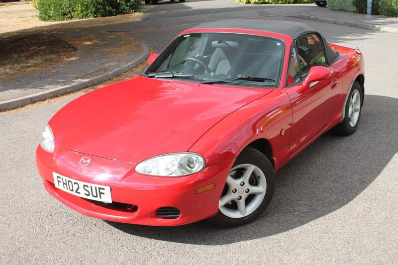
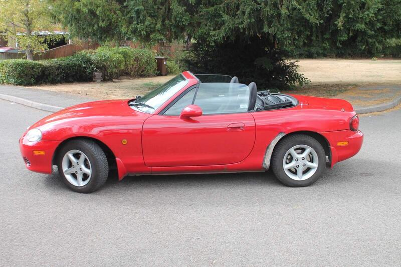

Seller photos from the AutoTrader ad.
Mazda MX-5 1.6
Cheap NB. Earlier find from the MX-5 hunt.
Key facts
| Price | £1,995 |
|---|---|
| Year | 2002 |
| Miles | 102,169 |
| Model | Mazda MX-5 1.6 |
| Colour | Red |
| Registration | 2002 (02 reg) |
| Owners | 6 owners |
| Service history | Not stated |
| MOT | Not stated |
| Seller | Private |
| Location | Buckingham |
| From GU7 | 55 mi (AutoTrader) |
| Checked | 13 Oct 2026 |
Why buy it
- New soft top 2025 (ad)
- Owned 4 years by an enthusiast
Things to check
102k miles, 6 owners
Aftermarket exhaust and intake
NB: check the sills and chassis rails
- Mazda MX-5 NC / NB weak spots
Rear subframe, rear arches and sill ends; NB sills and chassis rails. Underseal can hide rot. Engine mostly bulletproof; timing-chain tensioner, seizing calipers, rear diff leaks, cracking coolant tank.
Seller says (extract)
“Selling my greatly cherished 2002 Mazda MX-5. I have owned this car for the past 4 years as my first car and I have loved every moment in it. It drives fantastically and has had very few mechanical issues during my ownership. It has never failed to put a smile on my face due to the fantastic gearbox feel and sharp handling. It sounds brilliant with an aftermarket exhaust and air intake but not too loud. Seats are remarkably comfortable for a 24 year old sports car! Selling as I wanted something with air-conditioning. Some highlights: -New soft top roof (2025) -4 Michelin all-year tyres -New Front brake pads -MX5 Parts stainless steel backbox (Nice noise, not loud) -Cobalt air intake -Leather handbrake & gait cover -Chrome air vent and gearbox trim -Red/chrome snooker ball gear knob Negatives: -Bodywork in need of some TLC (obvious rust on rear wings) - Fan speed 1 doesn't work…”